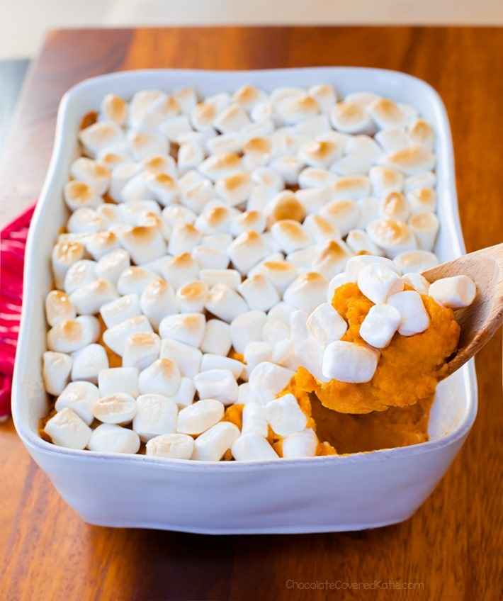

Home
Sweet Potato Casserole

Description
Having a brother that's been vegetarian for as long as I can remember, I was bound to find some great recipes. This one here is no exception. Want a healthier alternative of a tasty dessert? Then look no further.
Ingredients
- 3 large or 5 medium sweet potatoes
- 2/3 cup milk of choice or coconut milk
- 2 tbsp sweetener of choice
- 2 tbsp your choice: almond butter, tahini, oil, buttery spread, or omit for fat-free version
- 3/4 tsp salt
- 1/2 tsp cinnamon
- 1/4 tsp powdered ginger
- Optional pinch of nutmeg
- 2-3 cups vegan marshmallows or top with vegan marshmallow fluff
Steps
- Line a large pan with parchment.
- Make cuts with a knife into each sweet potato 8-10 times, going about a third of the way down with each cut.
- Place potatoes on the pan, and place on the oven center rack.
- Only now, turn the oven to 480 F. Bake 30 minutes, then turn and continue to bake (10-40 more minutes, depending on size) until you can see some of the natural sugars spreading onto the paper.
- Measure a packed 3 1/2 cups of the sweet potato (skin removed) into a large bowl.
- Mash with remaining ingredients except marshmallows.
- Preheat oven to 350 F.
- Grease an 8×8 pan, and spread the potato filling into the pan.
- Top with marshmallows. (If using fluff, add it after baking instead.)
- Bake 20 minutes, or until filling is hot and marshmallows have browned. Serve hot. Leftovers can be covered and refrigerated 3-4 days.
Source